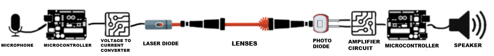
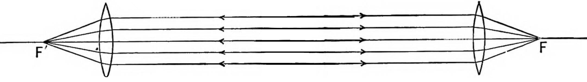

Communication has become a vital part of our lives in the modern world. Technology
has advanced, and communication systems have changed to offer information
transmission methods that are quicker and more dependable. The laser-based
communication system is one such innovation that has attracted a lot of interest
recently.
Instead of using conventional radio-frequency signals to transfer data across the
atmosphere or across space, laser-based communication systems use laser beams. It
has a number of benefits over conventional communication systems, including better
data rates, improved security, and longer ranges. Due to these benefits, it is suitable for
uses requiring rapid and reliable communication, such as satellite communication, deep
space missions, and military communications.
Our team has developed a laser-based communication system capable of transmitting
microphone signals using a laser beam by first digitalizing the signal, sending it,
capturing it, and then converting it back to analog form so that it can be played through
speakers as it was originally recorded. This device can also send any other analog or
digital signals at very high speed across a 450nm wavelength laser beam.
The purpose of this research is to illustrate the potential of laser-based communication
systems for real-world uses in data transfer and communication. We want to help in improving
laser-based communication technology and open the door to its implementation in a
variety of applications, particularly those that demand fast and dependable communication.
Overview
In Our research, we aimed to create a laser-based communication system that could
send audio signals from a microphone to a speaker. The audio signal was sent by our
system using a laser transmitter and received by a photodiode. The receiver amplified
the signal and sent it to a microcontroller board, where it was converted back to an
analog signal, amplified again, and played through a speaker.
This was accomplished by using two NUCLEO-G431RB boards which have an onboard
ADC with a 12-bit resolution for digitizing the audio signal and an onboard DAC, also
with a 12-bit resolution, for converting it back to analog. We transmitted data using the
USART protocol where we used 8 data bits and no parity bits (1 stop bit), which allowed
us to reach a high data rate of 512,000 bits/s. To set the sampling frequency of an ADC
we used the timer from our NUCLEO-G431RB board which allowed us very high
flexibility due to its extremely high clock speeds up to 170MHz where we adjusted the
prescaler and Counter values to make the sampling frequency exactly 25KHz.
Managing unwanted noise, particularly high-frequency sounds, was one of the
difficulties we ran into while working on our project. Prior to the signal being played
through the speaker, we used filtering techniques to eliminate noise from the signal,
particularly a low-pass filter that mitigated any noise above 5kHz frequency. Additionally,
we utilized a laser with a wavelength of 450 nm, emitting the blue-violet color that is the
shortest wavelength on the color spectrum. We used a filter on our lenses to block out
other wavelength lights minimizing the distortion and noise. As this wavelength of light is
the shortest and therefore the least common human-visible light, our filter won't have to
bear other similar wavelength light thus only letting through our laser to the photodiode.
As mentioned, For our USART, we utilized 8 data bits without a parity bit, and we sent
two packets for each sample of data that the ADC gathered. There were a total of 12
bits in each sample, with the first packet containing the least significant 8 bits of the
12-bit sample and the second packet consisting of the most significant 4 bits of the
12-bit sample (the other 4 data bits are filled with 0’s).
On the transmitter side, we have a
high-sensitivity sound microphone sensor detection module which we use as a
microphone to get the analog input for our data. The incoming data goes into the
NUCLEO-G431RB board and is converted from an analog signal into a digital. The
remaining parts are a voltage-to-current converter and the 450nm laser diode. Voltage
to current converter is an absolutely crucial part of the project since the NUCLEO board
can't provide sufficient current to power the laser diode on its own.
As for the receiver side, the first component we have to talk about is photodiode.
We are using a BPW34 model in order to catch the laser. By itself
this photodiode and generally all photodiodes create a small current when their surface
is excited by a light shining on them, however, the current and voltage they produce are
not nearly enough to act as input for the NUCLEO board.
In short, we devised an amplifier design using two transistors: a 2N2907 BJT
and a 2N7000 MOSFET connected in a cascading fashion. We are also using the
B0505S-1WR3 module to provide desired and consistent voltage to the amplifiers.
after the digital signal gets amplified to 3.3V and enters a NUCLEO board on the receiver side
it is converted into an analog signal. After that conversion, the signal needs
to be amplified one final time in order to be audible. In order to achieve this
we use LM358 signal amplifier module. Once when we amplify the analog signal we
pass it through a simple low-pass filter (removing unwanted noise) and play it though speakers where the
original microphone input can be heared.

The convex lens of the collimator on the transmitter end enables correct focusing and
structuring of the laser light. The laser beam may be easily pointed in the direction of
the intended target distance by carefully setting the lens. It is crucial to remember that
even little variations in the lens positioning might cause the laser beam on the
transmitter's side to not be completely straight.
Another convex lens is used at the receiver end of the system to counteract the
collimator's effects. This lens successfully focuses the laser beam on a particular focal
point, in this instance the photodiode. The photodiode is in charge of taking in the laser
beam and turning it back into electrical signals so that they may be processed further.
A wavelength filter has also been added to the receiver side of the system to improve
system performance. Any light with a wavelength outside of the range of 370 nm to 495
nm is specifically targeted by this filter and eliminated. This filter efficiently stops
extraneous light from entering the photodiode, which could cause undesired noise and
distortion to enter the received signal.

Our test findings demonstrated that our laser-based communication system could send
audio signals from the microphone to the speaker with great quality and minimal
background noise. For real-time audio transmission, we were able to attain a data
transfer rate of 512,000 bits/s. Additionally, our technology showed how laser-based
communication may be used for distant sensing, high-speed data transfer, and secure
communication.
Summary
This project demonstrates the unique and practical use of laser technology for
communication objectives. Our approach, which involves two NUCLEO-G431RB
microcontrollers, one as a transmitter and the other as a receiver, reinforcing different
additional aspects already mentioned above such as receiver circuit, voltage to current
converter, and so on, provides a reliable and efficient wireless communication solution.
The combination of analog-to-digital conversion at the transmitter end and later
digital-to-analog conversion at the receiver end guarantees a continuous data transfer,
allowing for an unbroken communication channel.
The presented work displays the feasibility of serial communication in a laser-based
system by leveraging the USART protocol. This not only reduces data loss during
transmission but also improves communication reliability and speed. When compared to
standard wireless communication technologies, the inclusion of laser technology boosts
the system's capabilities by providing faster data transfer speeds and a wider range of
transmission.
This initiative advances communication technology by demonstrating an alternative to
radio frequency-based systems. It solves radio frequency communication limits such as
bandwidth limitations, interference, and security difficulties, providing a solution to many
existing communication obstacles.
In the long run, this initiative sets the way for a wide range of potential applications. The
technique might be used to establish high-speed, secure communication networks in
regions where standard approaches are either impractical or ineffective. Furthermore,
with further research and refinement, it has the potential to significantly enhance
industries like telecommunications, space communication, and even the construction of
smart cities, where dependable, high-speed communication lines are critical.
As the world continues to grow and evolve, attempts like these offer a look into the
future. This laser-based communication system demonstrates the power of technology
and its ability to impact our future by fixing existing issues and offering up new areas for
research.
However, it must be mentioned that laser-based communication does have some
drawbacks, such as the vulnerability to weather, as fog, rain, and snow can all influence
the laser beams' performance. Its range is further limited by the need for a clear line of
sight between the sending and receiving ends, which might be hampered by
obstructions like mountains, trees, and buildings.